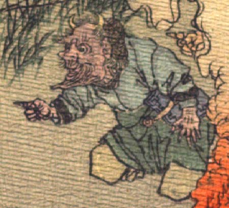

赤い肌の鬼。頭頂は禿げ、角が2本生えている。後頭部に巻き毛が生えている。目玉は丸く、頬骨が張っている。あごは長く突き出て、皺が寄っている。薄い口ひげが生えている。青い上着と緑色の袴状の衣服をまとい、座っている。右手で前方を指差し、驚いているように見える。
著作者：J.Dautremer／出典：親書誌：U426_nichibunken_0123：Le vieillard et les démons／日付：2006／資源識別子：U426_nichibunken_0123_0004_0004
Copyright (c)2010- International Research Center for Japanese Studies, Kyoto, Japan. All rights reserved.